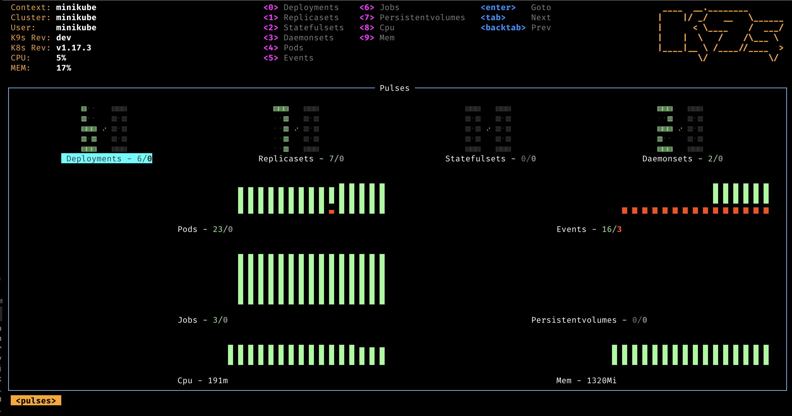
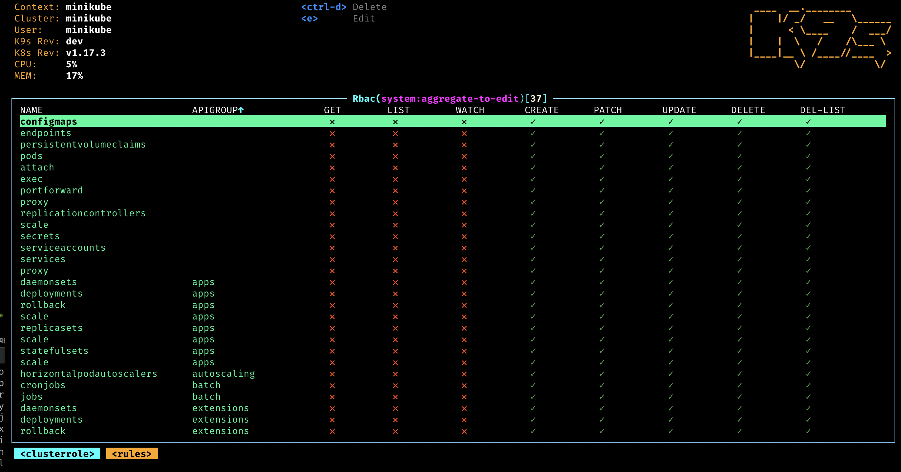
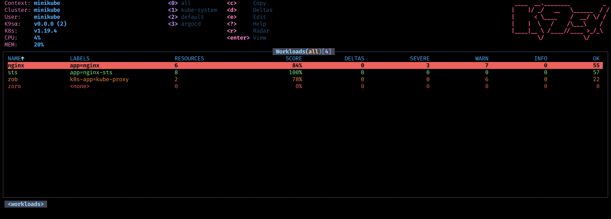
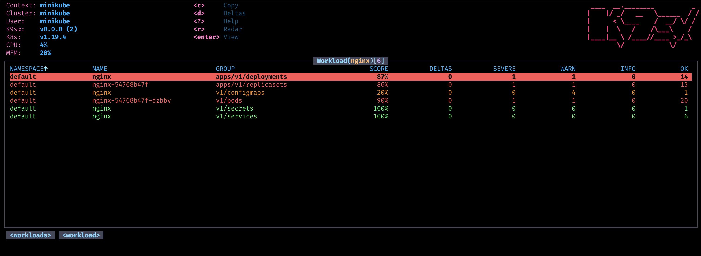

Who Let The Pods Out?
K9sAlpha - Manage Your Kubernetes Clusters In Style!
From the creators of K9s, comes the next generation of Kubernetes utilities from the K9s pack namely Alpha!
K9s𝜶 provides a terminal based CLI to interact with your Kubernetes clusters. The aim of this project is to make it easier to navigate, observe and manage your applications in the wild. K9s𝜶 continually watches your Kubernetes cluster for changes and offers subsequent commands to interact with your observed resources.
Features
- Information At Your Finger Tips!
- Tracks in real-time activities of resources running in your Kubernetes cluster.
- Standard or CRD?
- Handles both Kubernetes standard resources as well as custom resource definitions.
- Cluster Metrics
- Tracks real-time metrics associates with resources such as pods, containers and nodes.
- Power Users Welcome!
- Provides standard cluster management commands such as logs, scaling, port-forwards, restarts…
- Define your own command shortcuts for quick navigation via command aliases and hotkeys.
- Plugin support to extend K9sAlpha to create your very own cluster commands.
- Powerful filtering mode to allow user to drill down and view workload related resources.
- Error Zoom
- Drill down directly to what’s wrong with your cluster’s resources.
- Skin-able and Customizable
- Define your very own look and feel via K9sAlpha skins.
- Customize/Arrange which columns to display on a per resource basis.
- Narrow or Wide?
- Provides toggles to view minimal or full resource definitions
- MultiResources Views
- Provides for an overview of your cluster resources via Pulses and XRay views.
- Workloads provide for monitoring the applications you care for and diagnose not only their health but also the deltas between your manifests on disk vs what is currently running on your cluster.
- We’ve got your RBAC!
- Supports for viewing RBAC rules such as cluster/roles and their associated bindings.
- Reverse lookup to asserts what a user/group or ServiceAccount can do on your clusters.
- Built-in Benchmarking
- You can benchmark your HTTP services/pods directly from K9sAlpha to see how your application fare and adjust your resources request/limit accordingly.
- Resource Graph Traversals
- K9sAlpha provides for easy traversal of Kubernetes resources and their dependencies.
Get It!
Although, we will continue to support K9s, Alpha contains the next generation of features and enhancements.
You can download the binaries from our release page. In order to use Alpha, you will also need to select a subscription plan that best fit your use cases from our K9sAlpha Store.
Documentation
- Installation
- Quick Start
- Configuration
- Contexts
- Config
- Benchmarks
- Skins
- Workloads (NEW!)
- Aliases
- HotKeys
- Plugins
- Resource Columns
- RBAC
- Tutorials
Previews

- Pulses - A top level dashboard of the state of affairs of your cluster 
- XRay - Dig in your cluster resources and view their dependencies

- Pods - List out your pods status and resource consumption

- Logs - View and interact with your container logs

- RBAC - View the who/what/how of authorizations on your cluster 
- Workloads - Define and monitor various workloads on your cluster 
- Workload - View a specific workload related resource list and scans 
Get In Touch!
 © 2021 Imhotep Software LLC. All materials licensed under
Apache v2.0
© 2021 Imhotep Software LLC. All materials licensed under
Apache v2.0